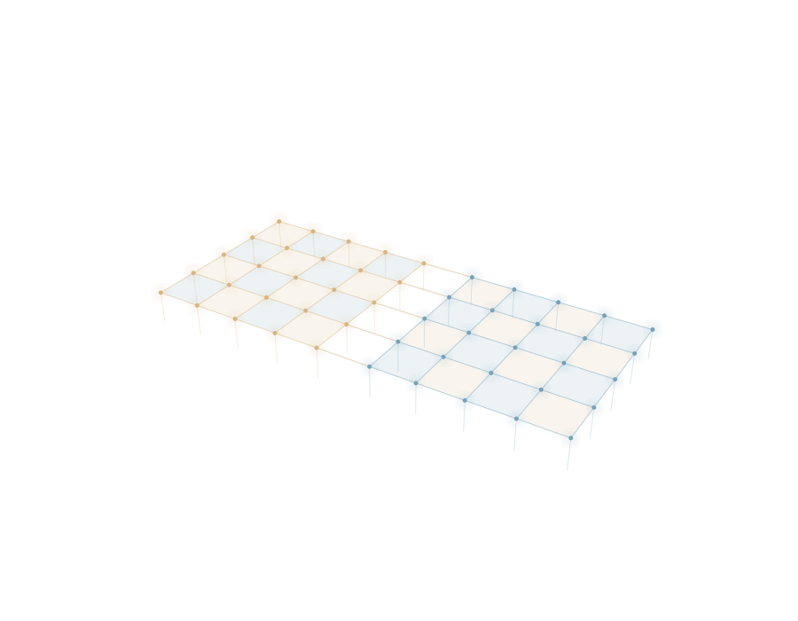
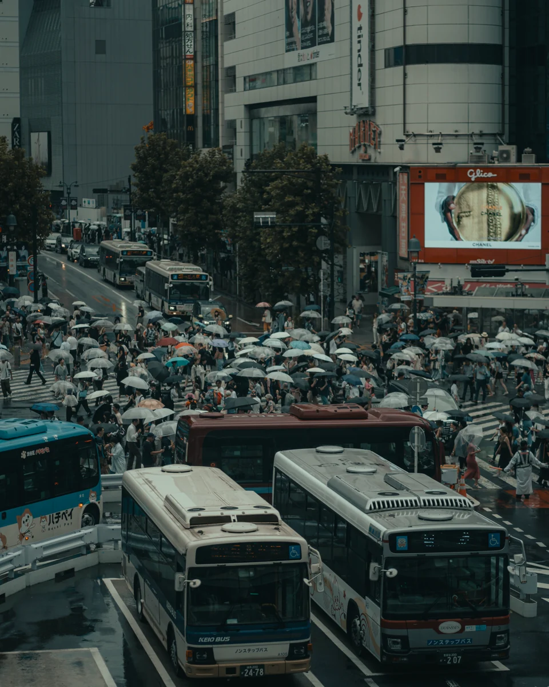
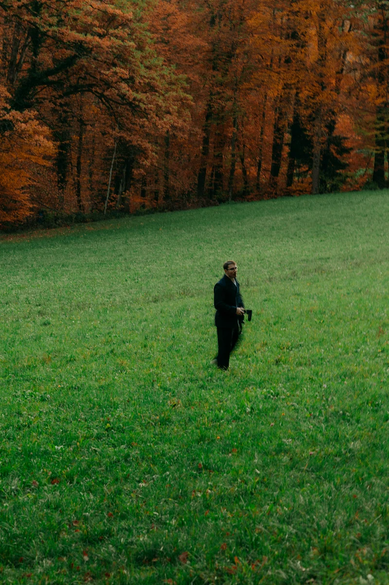

Quantum engineer & curious observer
Nicholas
Gialouris.
Exploring the delicate structures of
quantum information. Finding beauty
in the world beyond them.

Inspired by surface-code quantum computing
 Through my lens
Through my lens
Small scales.
Big questions.
My work sits at the intersection of quantum information,
experimental physics, and scientific software.
Alice & Bob
01Quantum error correction / ETH ZürichMoving quantum
information.Logical-qubit teleportation through lattice surgery.2026
Quantum information is fragile. Encoding it across multiple physical qubits creates a logical qubit—and a new question: how can we move its state between protected regions?
For my master’s thesis in Prof. Andreas Wallraff’s group, I demonstrated logical-state teleportation between two distance-3 surface-code patches on a superconducting processor. I developed software to implement, simulate, and analyse experiments, benchmarked decoders, and investigated the sources of error.
02Fault-tolerant computing / Alice & BobThe energy behind
the computation.Understanding the resources useful quantum computing needs.2025–26
The cost of a quantum algorithm extends beyond its logical operations. Hardware parameters and error-correction choices shape the physical resources—and energy—it requires.
During my research internship at Alice & Bob in Paris, I developed workflows to estimate the energy consumption of fault-tolerant algorithms on cat-qubit architectures. I also contributed to anb-estimator, an open-source resource estimator built with Rust and Python.
Explore anb-estimator03Quantum optics / ETH ZürichListening to
the quietest light.Detector design, squeezed light, and photonic quantum states.2025
Measuring squeezed light requires electronics sensitive enough to distinguish a small optical signal from the noise introduced by the detector itself.
In Prof. Rachel Grange’s group, I designed a balanced homodyne detector targeting up to 2 GHz bandwidth, with calculated electronic noise about 10 dB below shot noise. My work included custom PCB design and GHz-range circuit characterization. I also modelled photonic cat-state generation in lithium niobate, contributing to a Quantum 2.0 conference paper.
Co-author · Deterministic Photonic Schrödinger Cat States by Engineered Two-photon Dissipation
Quantum 2.0 Conference and Exhibition, QM4A.1 (2026)
For the details, there’s a CV.
View my CVThe world,
as I see it.
Light, places, and the moments
that make me look twice.


Sometimes,
the most interesting
thing is simply
what’s there.






More than
one perspective.
I’m Nicholas, a quantum engineer based in Zürich. My work has taken me from quantum optics at ETH Zürich to cat-qubit resource estimation in Paris, and back to quantum error correction.
Research is one part of who I am. Photography, creative work, and sport are others. This space brings those different sides together.